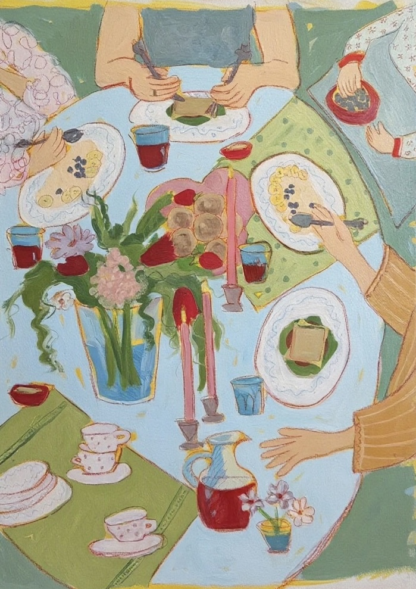

«Семейный завтрак»
70 × 100 см, 2026
35 000 ₽
Холст на подрамнике, акрил, масло и масляная пастель.
Описание
На картине — фрагмент застолья: вид сверху на круглый стол с тарелками, чашками, кувшином, вазой с цветами и свечами. Вокруг — руки и фрагменты фигур людей. Композиция в стилистике наивного искусства, с мягкой пастельной палитрой и нарочито упрощёнными формами, передаёт атмосферу уютного совместного обеда или ужина.